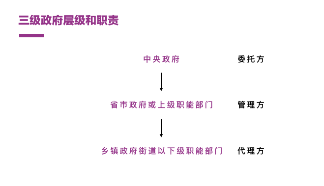

第二篇覆盖周雪光所著《中国国家治理的制度逻辑——一个组织学研究（The Institutional Logic of Governance in China - An Organizational Approach）》中第三章《中国政府的治理模式:一个“控制权”理论》的内容，该篇论文的PDF可在这里找到。
本章的核心逻辑在于将中国政府的三级组织形式，结合不完全契约论的理论框架，理解中国普遍存在的「行政发包制」这一治理方式的特殊性。
三级层次组织结构
中国的组织治理基础是三级政府层次，它们分别是：
- 中央政府；
- 中间政府，包括省市政府或上级职能部门；
- 基层政府，包括乡镇政府、街道、以下级职能部门。
三级政府层次分别扮演着三种角色并承担不同职责：
- 委托方的中央政府：政策制定、组织设计、激励设置、绩效评估的最终权威
- 管理方的中间政府：被授予部分权威的省市政府或上级职能部门实施监管；
- 代理方的基层政府：落实政策执行的乡镇政府、街道、职能部门。

不完全契约
不完全契约的理论来自于现代信息经济学研究。其框架是将博弈主题分为委托人和代理人两类，将其交易看作契约（Contract），并研究委托人如何通过收入转移和风险分担来激励代理人（参考1）。
这里的契约可能有两种：
- 一个涵盖未来所有可能情况的契约，可以明确双方的权利和义务，则是完全契约；
- 因为人的有限理性、信息的不对称、和未来的不可预见性，契约无法涵盖所有可能情况，则契约便是不完全契约。
不完全契约的实施方式通常是在事前签订一个简单契约，然后在事后进行谈判。谈判的基础在于将事后的控制权配置给投资或产出更多的一方（参考2）。
而作为发展中国家，中国的国家政策执行事务中缺少先例可循，法律法规相对不健全，执政党又有从经济成就中获得合法性的内生动力，即一个迫切需要政策执行的「勤政」的政府——这些都导致中国政府组织形式中的委托方和代理方作为契约的双方也必然遇到更多无法用完全契约约定的情况，即处理大量不完全契约的问题。
控制权问题
当委托人将政策执行以发包的形式交给代理人时，必须将一定控制权配置给代理人，以激励其更好地完成任务，这些控制权包括：
- 目标设定权：对政策进行解释并落实到具体实施指标；
- 检查验收权：对政策实施的过程进行验收保证达标；
- 激励分配权：对政策实施的过程进行激励和分配利益或风险。
根据具体事务的不同（所需调动的社会资源、紧急程度、复杂程度、目标的不可预测性等），控制权分配与否、方式、和程度都有可能不同，加上中国独特的三级组织形式，形成了其经典的「行政发包制」。
行政发包制
行政发包制有如下特点：
- 委托方设置目标，将政策进行解释并将指标发包给「承包方」；
- 委托方持有对承包方交付物的检查验收权；
- 承包商行使其辖区内激励分配权和实施的其他控制权。
结合中国的三级政府组织，政策在这个制度下的执行前期变为：
- 中央政府设立具体政策目标，并发包给中间政府；
- 中央政府定期检查和评估中间政府上交的政策实施成果；
- 中央政府将激励权等实施过程的控制权赋予给中间政府；
这种配置有其合理性：
- 中央政府只关心政策执行结果、并不关心执行的实际部署；
- 中央政府保留绝对权威的检查权以确保如期交付；
- 承包方的中间政府同时作为管理方对实际情况和代理方的努力程度有着更准确的信息，可以更好的实施激励分配权。
在这种配置下也在各级政府中产生了有趣的行为方式：
- 政策执行结果全面验收的成本极高、则委托方通常采用抽查形式验货；
- 委托方不干涉激励分配，使得检查验收过程和激励分配关系松散甚至毫无关联。
如果纵观整个政策实施过程，中间政府实际上承担两种角色：
- 政策规划和发包过程中的承包方；
- 政策执行和验收过程中的管理方——通过各种管理手段保证作为代理方的基础政府完成任务。
这两种角色使得中间政府在管理方式上形成了截然不同甚至互为矛盾的两种治理手段：
- 层层加码：在执行过程中向代理方施加压力，使其努力工作，以应对随机抽查的不确定性；
- 中间政府和基层政府间共谋：在委托方的检查验收过程中，管理方和代理方有着共同利益确保交付物被委托方接受，于是管理方行使激励权确保验收过程不出纰漏，并帮助基层政府对不合规现象进行解释甚至包庇，最常见的方式解释为个别现象、或地方特殊情况。

无论政治党对政策执行的要求，或是不完全契约广泛存在的历史现实，行政发包制在中国现阶段都具有其合理性，同时，它也很好地解释了中国政治治理中广泛存在的层层加码和共谋行为的本质和必然性。
控制权理论的延伸
控制权理论有助于分析不同国家治理模式，即研究：
- 不同控制权的所属方；
- 中央政府和中间政府的角色。
下表展示了不同控制权所属方及中央与中间政府的角色形成的不同国家治理模式：
值得注意的是，在现实治理中，控制权分配方式并不是唯一的，相同的政策可能因为现实环境要素的不同发生治理模式的相互转化，这些要素可能是：
- 政策执行所需动员资源的规模；
- 规划的不确定性；
- 执行过程中的当地特殊性。
当所需动员社会资源越大，例如战争、社会危机、或执政党急需获得合法性，就越有可能采用高度关联的动员方式；而当社会法律法规相对完善、无须大规模国家政策执行（区域发展相对均衡）、有先例所循、完全契约更具可操作性，掌握所有控制权的中间政府脱离中央政府制定并执行区域性政策的联邦制治理就越有土壤。
同样，政策执行的多样性也导致了治理模式的同时存在，即不存在绝对的治理模式。
写在最后
中国政府的三级组织形式、卡里斯玛权威对于伟大经济成就执行的强烈诉求、不完全契约（先基于不确定性缔约、再在事后进行谈判分配权力）的社会现实，导致了中间政府／上级职能部门和地方政府／职能部门间不完全契约的合作模式。
这个背景下，上级部门向下级部门进行发包成为中国政府治理的一种普遍形式，称之为「行政发包制」——委托方的中央政府将一些特定政策目标承包给承包方的中间政府，中间政府又层层转包给基层政府或下级职能部门，中央政府同时保有绝对的检查验收权。
根据事务和地方情况的不同（成本和实施效果），中央政府会根据情况分配部分权力（目标设定、检查验收、激励分配）给中间政府。而中间政府则在政策执行的规划和检查过程中展现完全矛盾的两种行为：层层加压和共谋行为。
权力分配方式导致了完全不同的治理模式和政府行为，不同政策的执行可能采用不同的治理模式、相同政策在不同历史时期也可能采用不同的治理模式。
结合前章关于卡里斯玛权威执于经济成就的论述，周雪光先生的论著帮助我们从信息经济学的理论框架中理解中国政府治理模式的合理性，解读中间政府和基层政府独特的政府行为，并延展出多种治理模式，深刻而有趣。